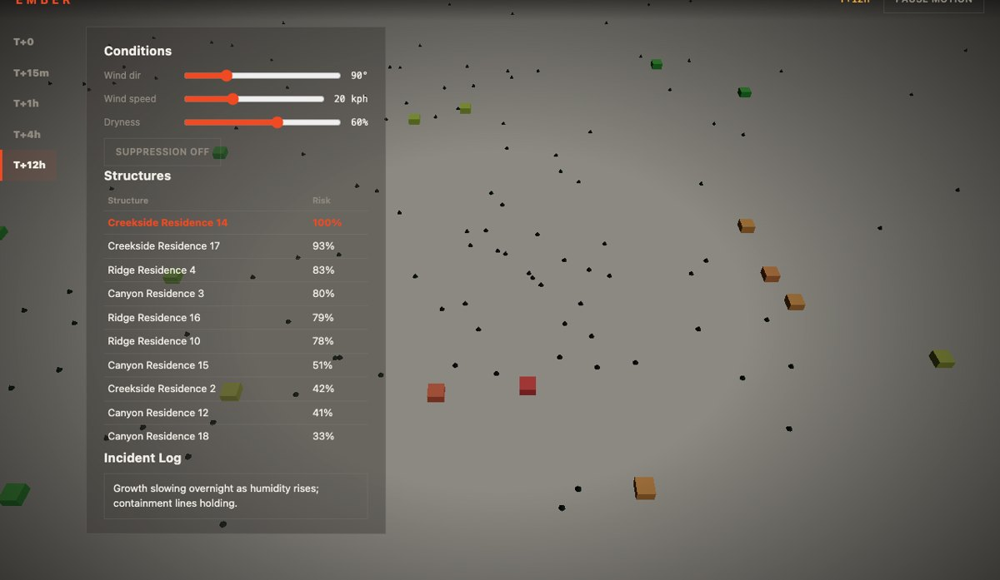
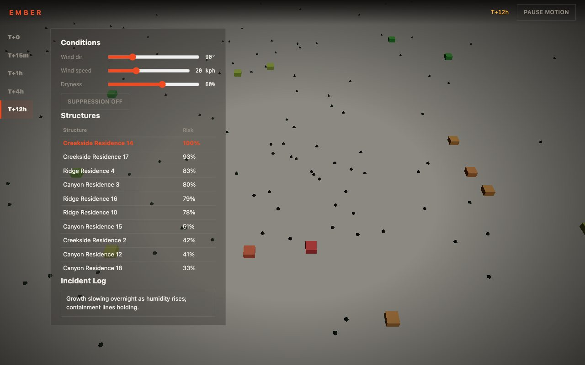

Blender · three.js · motion design · 2026-10
What Does One Wind-Shaped Formula Do to 18 Houses?
A wildfire behavior and community risk digital twin: one wind-elongated perimeter function, evaluated identically in a GLSL terrain shader and two TypeScript instance-color loops, drives the fire's shape, the char state of 160 trees, and the live risk of 18 structures from a single set of adjustable conditions.

Built from blueprint 08 of a written build book (Advanced Engineering Build Book, Volume VIII) as one vertical slice, using the five-tool-design-pipeline skill: an Awesome Design file for type/spacing scale, the Taste/Impeccable checklist, Playwright including a terrain-recolor pixel-sample check, Three.js as the product. Everything is synthetic: the 18 structures and incident log come from a seeded generator, and the fire-spread model is a closed-form function, not a cellular-automaton or agent-based simulation. Not built: a real fire-behavior model, MapLibre/deck.gl/PostGIS, a Python backend, auth.
01 — The problem
The book's rule for this blueprint is that wind, dryness, a suppression line and the ignition point are all user-adjustable, and the visualization has to be 'stylized and physically inspired, not game-like.' That rules out both a static burn image and a literal particle-based fire simulation; the spread has to be a real function the user can actually perturb.
02 — What I built
One repository with the whole pipeline.
- A scripted asset:
model/build.pybuilds a conifer tree and a house, exports GLBs, renders a poster. - A domain model: a wind-elongated perimeter radius (grows with time^0.75, scaled by dryness, biased downwind by wind speed), an inside/outside test, and per-structure risk with a suppression discount, all pure and unit-tested.
- A browser runtime where the same perimeter formula is evaluated in a GLSL terrain shader and in two TypeScript instance-color loops (trees, structures), so the burn pattern, the char state and the risk table can never show a different fire from each other.
- An intro that sparks an ember, lets it ignite a second patch, rises the camera, and hands off through a light mask.
- Fallbacks: poster for no WebGL, static keyframes for reduced motion.
03 — How it was built
- 01
One formula, three implementations, kept honest by tests
GLSL can't import a TypeScript function, so the perimeter formula is written three times: once in the shader, once for tree coloring, once for structure risk. The unit tests pin the TypeScript version's behavior (downwind radius exceeds upwind, suppression lowers risk) so a drift between the copies would show up as a visual mismatch the pixel-sample e2e test could catch, even though it can't check the GLSL algebra directly.
float rel = mod(angleDeg - uWindDir + 360.0, 360.0); float da = min(rel, 360.0-rel); float windFactor = 1.0 + (uWindSpeed/40.0) * cos(radians(da)); - 02
A scale bug found by looking at the actual render
The first pass set instance scale to a raw value (3 for houses) without accounting for the scene's 1-unit-per-100-meter convention, so a single house rendered three full scene units tall, large enough to fill the camera at the intro's starting position. Fixed by choosing scale values directly in scene-unit space. Documented in
docs/asset-contract.mdsince no automated test caught it (the suite checks that colors change, not object size). - 03
Suppression as a real discount, not a flag
Toggling suppression halves risk for any structure outside the current perimeter, applied in the same
structureRiskAtfunction the table and the 3D colors read, so the effect is visible in both places at once, not just a checkbox state.
04 — Results
T+12h, a realistic risk spread:

Checks. 12 unit and API tests, 17 Playwright tests including the terrain pixel-sample check, clean typecheck.
Performance, SwiftShader (no GPU claim). 3 draw calls for the whole scene (terrain, 160 trees, 18 structures), 3,098 triangles, 566 KB gzipped JS. Median 16.7 ms per frame.
05 — What I'd do next
- Measure on a physical GPU and a mid-range phone.
- Add a bounding-box sanity check to the test suite so a future scale bug like this one fails automatically.
- Replace the closed-form perimeter with a real cellular-automaton fire-spread model (the book's suggested approach) for finer-grained local terrain effects.